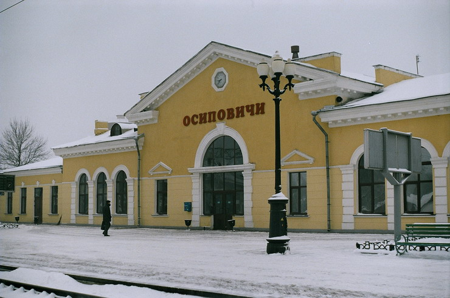

Станция Осиповичи входит в состав Транспортного Республиканского Унитарного предприятия «Могилевское отделение Белорусской железной дороги» на правах самостоятельного структурного подразделения (филиала) без права юридического лица и действует на основании Положения, утверждённого начальником отделения дороги.
Основными задачами деятельности являются:
- удовлетворение общественных потребностей в перевозках грузов и пассажиров;
- реализация социальных и экономических интересов трудового коллектива;
- деятельность железнодорожного транспорта;
- услуги терминалов;
- хранение и складирование;
- организация перевозок грузов;
- сдача внаем собственного недвижимого имущества;
- рекламная деятельность;
- страховое посредничество;
- деятельность в области таможенного дела;
- перевозка пассажиров и грузов (исключая технологические внутрихозяйственные перевозки пассажиров и грузов, выполняемые юридическими лицами и индивидуальными предпринимателями для собственных нужд) автомобильным, внутренним водным, морским транспортом.
Билеты:
| Маршрут | Дата отправления | Время отправления | Стоимость билета | Стоимость билета для дитей и пенсионеров |
|---|---|---|---|---|
| Осиповичи-Минск | 22.09.2020 | 15.00 | 5 руб | 2 руб |
| Минск-Гомель | 23.09.2020 | 15.00 | 4 руб | 2 руб |
| Осиповичи-Жлобин | 25.09.2020 | 15.00 | 5 руб | 2 руб |